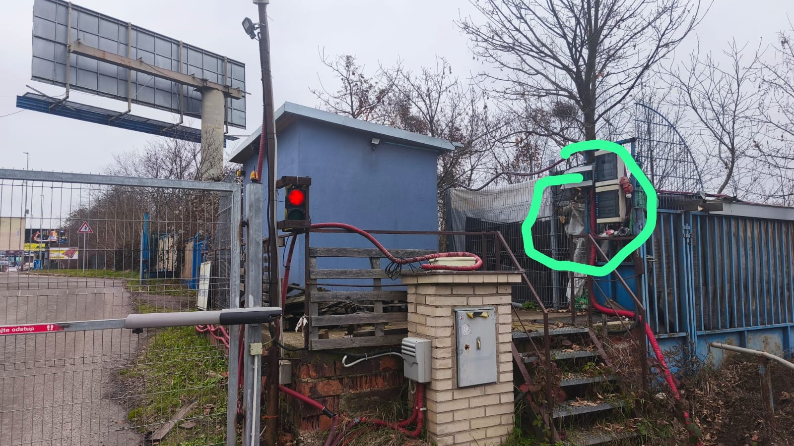

Mất điện – sơ cứu
Nếu bạn có thể hoạt động trên bảng điện, hãy kiểm tra các tấm như trong hình này. CHÚNG THC: LUÔN VÀY BÁO CỦA GAME SOLE khi chạm vào bất kỳ bảng điều khiển hoặc thiết bị điện nào!
Xem dưới đây và gọi chúng tôi trong trường hợp cần thiết!

Các chấm đỏ cho biết vị trí các công tắc cần kiểm tra xem đã được gạt lên hay chưa.
Trước hết, hãy kiểm tra tủ điện bên trong houseboat: tất cả công tắc phải ở vị trí gạt lên.

Tất cả các công tắc nên hoạt động. (trừ khi có một dấu hiệu, băng hoặc bất cứ điều gì khác thường).

Các tấm điện ở bến tàu, tương tự như cái này. Một số là lưng cho lưng.

Kiểm tra những vị trí này, gần cổng màu xanh.

Chúng cũng có thể bị ngã xuống.

Ở đầu bãi đậu xe, kiểm tra xem số 9 có tất cả các bộ ngắt (


Số 9 bên trong (bạn cần một chìa khóa hoặc một cái gì đó mà xoay chân vuông)
Mẹo: một chiếc kéo có thể giúp xoay lỗ vuông của tay cầm để mở số 9.
QUAN TRỌNG: sau đó hãy luôn đóng lại cửa tủ, đặc biệt khi trời mưa.

Tiếp tục đi, số 8 có một vài công tắc mà cũng phải được lên.
Mẹo: một chiếc kéo có thể giúp xoay lỗ vuông của tay cầm để mở số 8.
QUAN TRỌNG: sau đó hãy luôn đóng lại cửa tủ, đặc biệt khi trời mưa.

Kiểm tra bên trong. Luôn kiểm tra xem không ai làm việc ở hạ lưu!
QUAN TRỌNG: VUI LÒNG BÁO CÁO CÔNG TẮC NÀO BỊ NGẮT. CHỤP TRƯỚC VÀ SAU.
Bị mất điện trong nhà thuyền là phổ biến hơn so với một căn hộ do lý do dung lượng và nhiều yêu cầu do thời tiết đặc biệt là vào những ngày rất ấm hoặc rất lạnh.
Trang này được dịch tự động từ hướng dẫn tiếng Anh. Nếu có điểm chưa rõ, bản tiếng Anh được ưu tiên áp dụng. Bản gốc tiếng Anh